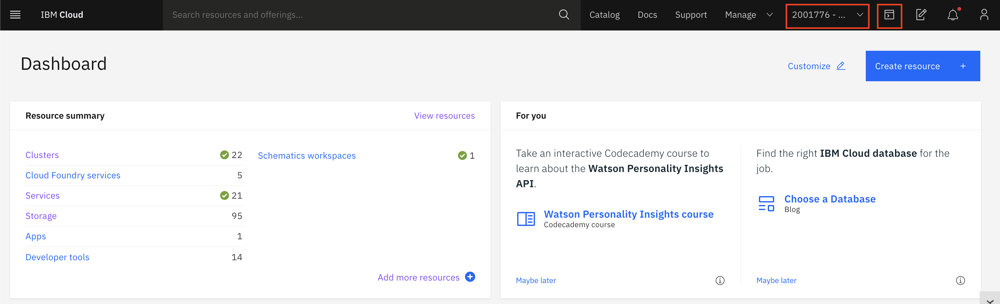
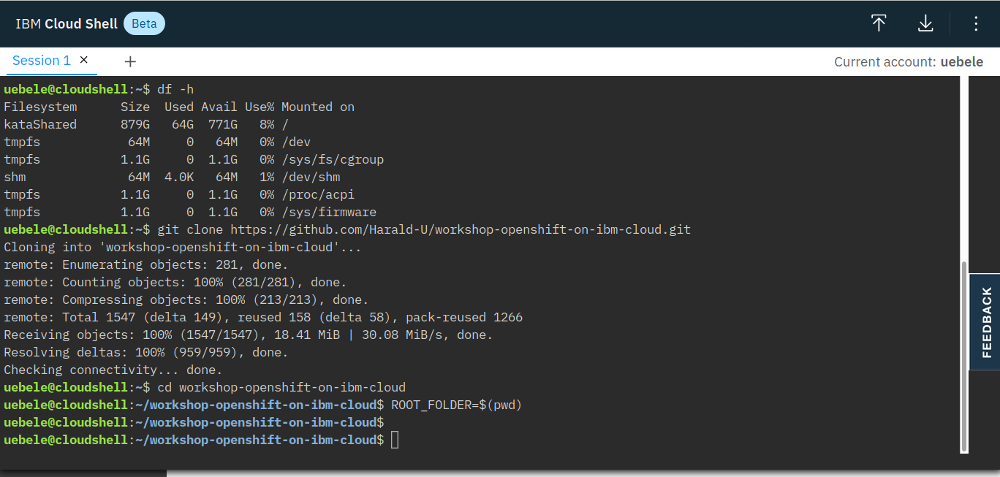

The IBM Cloud Shell: Using the CLI
For this workshop we'll be using the IBM Cloud Shell. The IBM Cloud Shell is a cloud-based shell workspace that you can access through your browser. It's preconfigured with the full IBM Cloud CLI and tons of plug-ins, and other 3rd party CLIs like OpenShift's oc, Helm's helm and Kubernetes' kubectl.
Refer to the SETUP_CLI section if you wish to install these CLIs on your local machine.
Accessing the IBM Cloud Shell
From the IBM Cloud console, click the IBM Cloud Shell icon. A session will start and automatically log you in through the IBM Cloud CLI.
NOTE Make sure you've selected the right account in the account list

From here, you can access pre-installed CLIs like git, kubectl, and many others.
